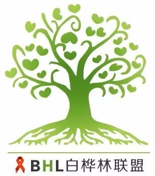

疫情中的故事——困于大海，无药求生
原文链接 备份链接 南冥有鱼/作者 安东/编辑 白桦/审核 新冠肺炎疫情依旧严峻，所有人都在提心吊胆，气氛阴沉。 日本钻石公主号在海上漂行，禁止游客离船上岸，据报道，目前已有14名中国游客感染。 今天故事的主人公也和大海有关，他是一名携 …
不想错过白桦林的推送？
戳上方蓝字“白桦林健康资讯”关注我们
并点击右上角“···”菜单，
选择“设为星标”
南冥有鱼/作者
安东/编辑
白桦/审核
正月的寒正渐散去，二月渐暖。2020年的春似乎来得晚了些，不过我们相信，她总会到。
疫情期间，白桦林一直在帮助各地因封闭管理而面临断药的病友协调拿药，网络平台分享的艾友故事也得到了很多人的共鸣与回应。声音，有时候代表着一种力量，而白桦林就是在为广大的艾滋病患者勇敢发声，让社会能够听到来自这个特殊角落的诉求。
今天故事的主人公来自新疆的克拉玛依市，让我暂且用小伟来称呼他。

新疆克拉玛依大油包
提起新疆，不知道您与我的感受是否一样，距离与陌生感不经意间夹杂着一丝畏惧。生活在祖国东部小城的我并未涉足过西域的大好河山，身边也没有来自新疆的朋友，知之甚少的风土人情再加上那里的宗教氛围，也就没见过世面地以为神秘土地上的艾友恐怕要比我活得艰难吧。
小伟平时在重庆工作，联系到白桦老师已经是断药的状态了。本打算要从乌鲁木齐飞回重庆取药，结果遇上了疫情封闭，一下子没了主意，慌张至极。白桦老师曾经问过很多借药的求助者，他们说那种感觉是绝望，绝望到一定程度也就淡定了，因为已经想好了最坏结果。去贴吧发帖求助，找志愿者帮忙也更多是在碰运气，毕竟素不相识的人，药物组合又可能不同，再加上每个人的药也都是有限的，哪有那么好借的呢？
疫情期间，封闭管理严格，对于平时吃药时间都很谨慎持守的小伟来说，打击可想而知。在白桦老师这么多年的志愿帮扶中，他已经在手机里标注了14000多个标签，这些标签织起了一张覆盖全国乃至全世界的巨大网格，而这张网不知帮助过多少绝望中的艾友。这次，很幸运，白桦林又为身在新疆的小伟找到了那个幸运“点”。
阿峰在群里看到白桦林的求助信息，第一时间与我们取得了联系，说他可以帮助小伟渡过难关。我一直相信，人与人之间会有一种冥冥中的缘分，艰难时刻中的恩人更不知道是何时的造化。阿峰是名医生，有城市通行的权限，虽然已经在服用自费药物了，但手头仍然有免费的替拉依组合可以借给小伟。我们都为小伟感到开心。白桦老师说，做了这么多年有关艾滋病帮扶的工作，最大的幸福或许就是这一刻吧！茫茫大海，身陷囹圄的人渴望着那苇扁舟，今天你渡我一截，说不定哪日我又载你一程，这不就是白桦林的初心么？
药就是命，邮寄来不及了，我们与阿峰商量第二天把药直接送到小伟居住的小区，阿峰答应了。紧接着，小伟来电，告知了我们一个好消息，经过协商，居委会同意他可以离开封闭的小区前往去机场，可是前提是只能自己一个人，家人亲属不能陪同。克拉玛依距离乌鲁木齐的机场相隔甚远，没有交通工具无疑不现实。白桦老师再次与阿峰沟通，能否在送药的同时再把小伟送去机场，尽快返回重庆取药，以免夜长梦多。这一次，阿峰又爽快答应了。
听白桦老师分享这个故事，写作至今，我并未与故事中的阿峰有过任何交流，不过我真的钦佩他，感谢他，如果有机会，我还想见见他。对于素未谋面的陌生人，能够无条件地去提供帮助，我想说这种付出让我看到了一种希望，这希望来源于守望相助的力量。
阿峰顺利接到了小伟，并给他提供了足够过渡的药物，小伟也从新疆飞回了重庆。我在想，此番困顿或许会让小伟更加坚定了生的希望，而阿峰也会备尝珍惜拥有的幸福。《圣经》里说：人活多年，就当快乐多年，然而当想到黑暗的日子，因为这日子必多，所要来的都是虚空。我们这一路经历过多少坎坷彷徨，迷茫绝望，但只要看清生活的真相，并恳切努力地走下去，还有什么能够击垮我们呢？

几次深夜与白桦老师微信交谈，能够看出他很疲惫，因为的确桩桩件件的鸡零狗碎，却又是关乎生命，所以他不能轻言放弃。有限的资源面对日益庞大的需求群体时，也会变得更加力不从心。我时常在想，如果没有彼此的理解，恐怕任何存在也会变得稍纵即逝。因此，无论你身在何处，历经万般磨难还是身处大好时光，都请珍惜我们能够有机会、有渠道成为彼此的彼此。
今天的故事并不复杂，情节也不惊心动魄，而在这人性琢磨不透，病毒肆意妄为的光怪陆离中，它给予我们的是信任、理解与团结的启迪。我们每个艾滋病患者，都无法脱离这个社会而做到完全的独处，寻找生命中的联结，爱与希望也许能让生活不那么苦吧！

文章已于修改
原文链接 备份链接 南冥有鱼/作者 安东/编辑 白桦/审核 新冠肺炎疫情依旧严峻，所有人都在提心吊胆，气氛阴沉。 日本钻石公主号在海上漂行，禁止游客离船上岸，据报道，目前已有14名中国游客感染。 今天故事的主人公也和大海有关，他是一名携 …
原文链接 备份链接 不想错过白桦林的推送？ 戳上方蓝字“白桦林健康资讯”关注我们 并点击右上角“···”菜单， 选择“设为星标” 保维/作者 安东/编辑 白桦/审核 在你们之前，我经历过。经历了这场瘟疫之前，我已经饱尝了瘟疫之苦。在这些漫 …
原文链接 备份链接 看到老师发在班级群里别人家小孩听网课认真做的笔记，自己家的熊孩子却边听网课边睡觉，笔都不拿出来，妈妈们立刻炸了毛。火势再蔓延到孩子爸爸身上，爷爷奶奶也赶来劝，结果就是一场又一场的家庭混战。 配图 |《学区房72小时》 …
原文链接 备份链接 “有一次我突击去检查孩子的网课情况，发现她网课是在播放，但是电脑桌面当前窗口显示的却是她的QQ群，原来一群同学正聊得欢。” 记者|王晓珊 编辑| 盛倩玉 小豆 实习生| 甘笠男 刘苗苗 龚纾绮 “咋出来的不是云课堂？难 …
原文链接 备份链接 🎧 点击上方图片，跳转「故事FM」小程序，收听真人讲述。记得添加「我的小程序」，一键收听全部故事哟！ 因为新冠肺炎疫情的影响，到目前为止，可能不少人都已经在家宅了半个多月了。 长时间过封闭的生活，缺少户外的社交、娱乐， …